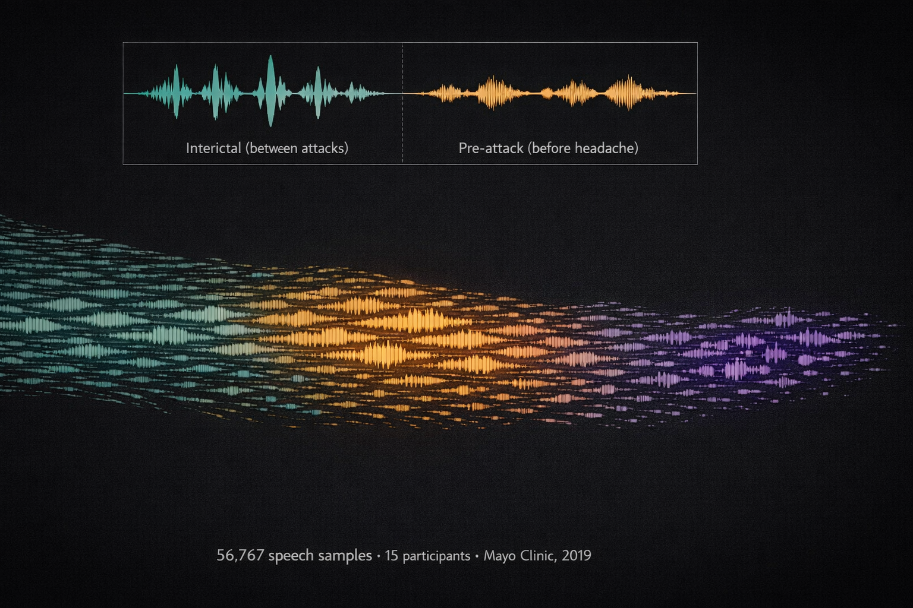
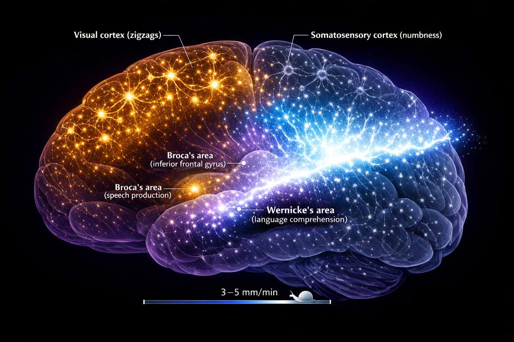
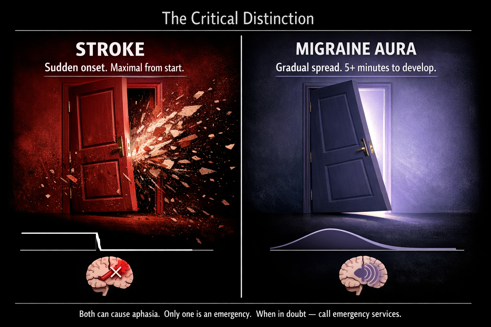

By Rustam Iuldashov
30 years lived experience with chronic migraine | Sources: 24 peer-reviewed references including REFORM (n=227), Mayo Clinic (n=30, 56,767 samples), Nature Reviews Neurology | Last updated: March 6, 2026
Medical Review: This content is based on peer-reviewed research from Cephalalgia, The Journal of Headache and Pain, Nature Reviews Neurology, Frontiers in Neurology, Headache, Brain Research, and ICHD-3 clinical guidelines.
Important Notice: This article is for informational purposes only and does not replace professional medical advice. The author is not a licensed physician or healthcare professional. If you experience sudden speech difficulty for the first time, call emergency services immediately — it could indicate a stroke.
She knew exactly what she wanted to say.
February 13, 2011. Grammy Awards night. Tens of millions watching live. CBS reporter Serene Branson stands outside the Staples Center in Los Angeles, microphone in hand, and opens her mouth to deliver a routine broadcast update. What comes out is not English. It is not any language at all — just fractured syllables folding into each other, as if the words themselves have shattered somewhere between thought and tongue.[1]
The clip went viral within hours. Social media erupted with a single question: Did we just watch someone have a stroke on live television?
The answer came the next morning from Dr. Andrew Charles, director of the Headache Research and Treatment Program at UCLA. The diagnosis: complex migraine with aura. The specific neurological feature: dysphasic language dysfunction — a condition in which the brain forms sentences perfectly, but cannot deliver them to the mouth.[1]
“I wanted to say, ‘Lady Antebellum swept the Grammys.’ And I could think of the words, but I could not get them coming out properly.”
— Serene Branson, CBS reporter, describing her on-air migraine aphasia episode[2]
One sentence. Perfectly imagined. Completely imprisoned.
For the estimated one billion people worldwide who live with migraine, that description doesn't sound like a news story. It sounds like a confession. Because the most terrifying thing about migraine aphasia is not the silence. It's the loneliness of being trapped behind it — fully conscious, fully aware, and completely unable to reach anyone.
The Aura Nobody Sees
Ask someone to describe migraine aura and they'll almost always reach for the same word: visual. Zigzag lines. Shimmering halos. Blind spots that bloom across the field of vision like ink spreading through water.
They're not wrong. The 2024 REFORM study — one of the most detailed prospective analyses of migraine aura ever conducted, involving 227 adults in a Danish tertiary care center — confirmed that 94.7% of participants experienced visual aura.[3] It is, overwhelmingly, what migraine aura looks like from the outside.
But the REFORM data revealed something else. Something far less visible and far more isolating. Among those same 227 participants, 31 — that's 13.7% — experienced speech and language aura.[3] Not numbness. Not tingling. The temporary inability to use human language.
A separate Italian multicenter study from the Italian Headache Registry, examining 272 patients with confirmed migraine with aura, put the figure even higher: 25.6%.[4] One in four. The difference likely reflects a simple and uncomfortable truth — many clinicians never ask about language symptoms, and many patients never volunteer them. You don't complain about words you couldn't say.
REFORM Study (2024): 94.7% visual aura, 35.7% somatosensory aura, 13.7% speech/language aura. Prospective cohort, n=227, Danish tertiary center, enrollment 2020–2022.[3]
Italian Headache Registry (RICe): 25.6% speech/language aura. Multicenter cross-sectional, n=272.[4]
Aura sequence (REFORM): Visual first (69.6%), then somatosensory (23.2%), speech/language last (3.6%) — reflecting the anatomical path of cortical spreading depression.[3]
This makes speech and language disruption the third most common type of migraine aura, after visual and somatosensory.[3, 5] And it follows a consistent anatomical logic. The REFORM study found that when multiple aura types occur in sequence, vision goes first, then sensation, and speech arrives last[3] — each symptom reflecting the path of a single electrical wave traveling forward through the brain. We'll return to that wave shortly. It is the villain of this story.
But first: a number that changes the conversation.
56,767 Whispers
In 2019, neurologist Todd Schwedt at Mayo Clinic did something no one had done before. He gave 15 people with episodic migraine and 15 healthy controls a mobile app, asked them to record speech samples three times a day, and waited. For months. Until the team had collected 56,767 individual speech recordings — one of the largest speech-monitoring datasets in migraine history.[6]
Then they listened.
Not with ears. With algorithms. They measured six features of each sample: speaking rate, articulation rate, articulation precision, average pitch, pitch variance, and phonatory duration. And what they found upended a basic assumption about migraine and language.
During the pre-attack phase — hours before the headache — measurable changes appeared. Speaking rate dropped. Articulation lost precision. Vowel sounds shifted. The participants' voices were deteriorating in ways too subtle for human perception, but clear as daylight to a machine.[6]
80% of participants who showed objective speech changes had no idea anything was different about their voice. Their migraines were rewriting their speech — and they couldn't hear it happening.[6, 7]
A 2024 follow-up in Headache confirmed the pattern and added a dose-response dimension: the more intense the headache, the slower the speech and the longer the pauses.[8] Pain, it turns out, doesn't just hurt. It silences.
What does this mean practically? It means speech monitoring — through an app on a phone you already carry — could one day serve as an early warning system, flagging an incoming migraine before you feel a thing. Schwedt's team said as much: the relative ease of mobile speech collection makes it an appealing objective marker for oncoming attacks.[6]

Three Millimeters Per Minute
Now for the villain.
In 1944, a Brazilian physiologist named Aristides Leão was studying epilepsy in a rabbit's exposed brain when he noticed something that didn't fit his experiment: a slow, massive wave of electrical depolarization rolling across the cortical surface, followed by minutes of eerie silence. He called it cortical spreading depression — CSD.[9, 10]
Eighty years later, CSD remains the leading explanation for migraine aura. Here's what it does, and why it matters for language.
CSD is not a nerve impulse. A nerve impulse travels at meters per second. CSD crawls at 3 to 5 millimeters per minute[11] — slower than a garden snail. But what it lacks in speed, it makes up for in devastation. As CSD passes through cortical tissue, every neuron in its path undergoes massive depolarization. Calcium and sodium flood inward. Potassium pours outward. Extracellular glutamate surges.[12] The affected neurons fire intensely for a brief moment — then fall silent, their energy reserves exhausted, their signaling capacity temporarily offline.
Think of it this way. Imagine a power grid where a surge rolls city block by city block: each block lights up brilliantly for a few seconds, then goes dark. The lights always come back on. But while the darkness is passing through your neighborhood, nothing works.
When this wave crosses the occipital cortex, you see zigzags. When it crosses the somatosensory cortex, your hand goes numb. And when it reaches Broca's area — the region responsible for organizing speech — or Wernicke's area — the region that decodes language meaning — words stop.[13] Not gradually. Not partially. They stop. You can think, but you cannot speak. You can understand, but you cannot reply.

A 2025 systematic review confirmed the clinical implication: when aura lasts longer than 60 minutes, the probability of speech involvement rises to 31%, likely because CSD has more time to propagate into anterior brain regions.[5] Time, in other words, is territory. The longer the wave travels, the more of you it takes.
But — and this is the sentence worth remembering — CSD does not destroy. A landmark 1988 study by Nedergaard and Hansen demonstrated that spreading depression does not cause neuronal injury in normal, healthy brain tissue.[14] The blackout is temporary. The neurons recover. The words return.
Every single time.
The Sixty-Minute Question
There is, however, a line. And every person with migraine aphasia needs to know where it sits.
According to the International Classification of Headache Disorders, third edition (ICHD-3), a typical migraine aura should last between 5 and 60 minutes.[15] The median duration for speech and language aura is approximately 20 minutes.[5] Twenty minutes of silence. Long enough to terrify you. Short enough to resolve before the ambulance arrives.
But what if it doesn't resolve?
⚠️ When to Seek Emergency Help
Any new onset of sudden speech loss demands emergency evaluation. Period. No exceptions. A 2024 review in Frontiers in Neurology reported that migraine accounted for >1% of all stroke unit evaluations, and 18% of incorrect thrombolytic treatments were administered to patients actually experiencing migraine, not stroke.[16]
If you are experiencing sudden speech difficulty, facial drooping, arm weakness, or any new neurological symptom — call your local emergency number immediately. Do not use this article to self-diagnose.
The critical clinical distinction: in stroke, neurological symptoms arrive suddenly and are maximal from onset. In migraine aura, they develop gradually, spreading over 5 or more minutes, and typically march through a recognizable sequence — vision, then sensation, then language.[3, 15, 17] Stroke is a slammed door. Migraine aura is a slow tide.
But in the first minutes, before the pattern reveals itself? Even experienced neurologists can struggle.[17] Which is why the rule is simple: if your speech fails and you've never had this evaluated, call emergency services. If you have an established pattern confirmed by a neurologist, you still track it — because the one time it's different could be the one time it matters most.

A Kit for the Silence
Once you know that migraine aphasia is part of your pattern, preparation replaces panic.
Build your emergency note now.
On your phone, create a lock-screen-accessible note: “I am experiencing a migraine aura. I cannot speak right now. This is temporary. I do not need an ambulance unless symptoms last more than 60 minutes or are different from my usual pattern.” Add your neurologist's number and current medications.[18]
Learn your sequence.
The REFORM data showed that aura types tend to follow a consistent personal order.[3] If your pattern is vision → tingling → speech loss, then the moment your hand goes numb, you know what's likely next. That foreknowledge alone can halve the fear.
Track everything.
Recording the type, order, duration, and context of each aura episode builds a personal dataset your neurologist can actually use. In the Migraine Companion app, Mi helps you log these moments — because your diary shouldn't require the very ability you've temporarily lost.
Don't fight the silence.
Trying to force speech during transient aphasia is like trying to run on a sleeping leg. The hardware is temporarily offline.[13] Rest in a quiet, dark room. Breathe. The language centers will come back online as CSD passes. They always do.
Coming Home to Language
I have lived with migraine for thirty years. I have experienced the zigzags, the numbness, the nausea, the throbbing that makes you negotiate with the dark. But nothing — nothing — compares to the loneliness of reaching for a word and finding empty air where it used to be.
The first time it happened, I was certain something irreversible had broken inside my skull. I didn't know about cortical spreading depression. I didn't know about Leão's rabbits, or Schwedt's 56,767 recordings, or the elegant cruelty of a wave that moves slower than a snail but silences everything it touches. I only knew that my thoughts were intact and my mouth was useless, and the gap between them felt like drowning on dry land.
I know now what I didn't know then. The wave passes. The neurons recover. The words come back.
They came back for Serene Branson, who returned to broadcasting and became an advocate for migraine awareness.[19] They come back for the 13.7% of people with migraine aura who experience this invisible, underdiscussed, profoundly frightening symptom.[3] And they will come back for you.
This article opened with a woman who lost her words on live television. It closes with a promise grounded in eighty years of neuroscience: the silence is temporary. Your voice is not gone. It's just waiting for the storm to pass.
Mi will be there when it does.
Key Takeaways
- Migraine aphasia affects 13.7–25.6% of people with migraine aura — the third most common aura type[3, 4]
- It's caused by cortical spreading depression (CSD), a slow depolarization wave first described by Leão in 1944[9, 10]
- CSD moves at 3–5 mm/min and temporarily silences neurons without causing permanent damage in healthy tissue[11, 14]
- Mayo Clinic collected 56,767 speech samples and found migraine alters voice before the attack — 80% of affected people don't notice[6]
- Higher headache intensity = slower speech and more pauses[8]
- Speech aura typically lasts 5–60 min (median ~20 min), sequence: vision → sensation → language[3, 5, 15]
- Any new speech loss is a medical emergency — migraine aura accounts for >1% of stroke unit evaluations[16]
- Preparation (ICE notes, sequence tracking, migraine diary) transforms panic into protocol
When to See a Doctor
- You experience speech or language difficulty during a migraine for the first time
- Your aura symptoms last longer than 60 minutes or differ from your usual pattern
- You experience sudden speech loss, facial drooping, or arm weakness at any time
- Your migraine aura has changed in type, duration, or frequency
- You experience aphasia without any headache (aura without migraine requires evaluation)
This article is a starting point for conversation with your doctor, not a replacement for medical care.
References
- Charles A. “Grammy Reporter Serene Branson Suffered Complex Migraine.” ABC News, Feb 17, 2011. abcnews.com
- Branson S. “CBS Reporter Serene Branson ‘Terrified’ After On-Air Complex Migraine.” ABC News, Feb 18, 2011. abcnews.com
- Vries T, et al. “Clinical features of migraine with aura: a REFORM study.” J Headache Pain, 25:23 (2024). doi:10.1186/s10194-024-01718-1. Prospective cohort, n=227.
- Italian Headache Registry (RICe). Multicenter cross-sectional, n=272. Speech/language aura 25.6%. J Headache Pain (2024).
- Noseda R, et al. “What does a migraine aura look like?” J Headache Pain, 26:156 (2025). doi:10.1186/s10194-025-02080-6. Systematic review.
- Schwedt TJ, et al. “Altered speech with migraine attacks.” Cephalalgia, 39(11):1390–1400 (2019). doi:10.1177/0333102418815505. n=30, 56,767 samples. Mayo Clinic.
- MDLinx. “Migraines can cause altered speech.” mdlinx.com
- Smith DC, et al. “Impact of headache intensity on speech.” Headache, 64(9) (2024). doi:10.1111/head.14809.
- Leão AAP. “Spreading depression of activity in the cerebral cortex.” J Neurophysiol, 7:359–390 (1944). doi:10.1152/jn.1947.10.6.409.
- Somjen GG. “Aristides Leão's discovery of CSD.” J Neurophysiol, 94:2–4 (2005). doi:10.1152/classicessays.00031.2005.
- Charles AC, Baca SM. “Cortical spreading depression and migraine.” Nat Rev Neurol, 9:637–644 (2013). doi:10.1038/nrneurol.2013.192.
- Pietrobon D, et al. “CSD as a target for anti-migraine agents.” J Headache Pain, 14:62 (2013). doi:10.1186/1129-2377-14-62.
- Teixeira M. “Crossed aphasia during migraine aura.” J Neurol Neurosurg Psychiatry, 76(8):1168 (2005). doi:10.1136/jnnp.2004.058917.
- Nedergaard M, Hansen AJ. “Spreading depression is not associated with neuronal injury in the normal brain.” Brain Res, 449:395–398 (1988). doi:10.1016/0006-8993(88)91062-1.
- Headache Classification Committee. “ICHD-3.” Cephalalgia, 38(1):1–211 (2018). doi:10.1177/0333102417738202.
- Poursadeghfard M, et al. “Migraine pathophysiology and stroke risk.” Front Neurol, 15:1435208 (2024). doi:10.3389/fneur.2024.1435208.
- Mackenzie A, et al. “Stroke mimics.” Ann Med, 53(1):420–436 (2021). doi:10.1080/07853890.2021.1890205.
- MigraineBuddy. “Migraine Aphasia: Symptoms and Cause.” (2023). migrainebuddy.com
- CBS LA. “Serene Branson Looks Back.” Feb 14, 2012. cbsnews.com
- Close LN, et al. “CSD as a site of origin for migraine: Role of CGRP.” Cephalalgia, 39(3):428–434 (2019). doi:10.1177/0333102418774299.
- Hadjikhani N, et al. “Mechanisms of migraine aura revealed by fMRI.” PNAS, 98(8):4687–4692 (2001). doi:10.1073/pnas.071582498.
- Ayata C, Lauritzen M. “Spreading depression and cerebral vasculature.” Physiol Rev, 95(3):953–993 (2015). doi:10.1152/physrev.00027.2014.
- Chung CS, Caplan LR. “The Migraine–Stroke Connection.” J Stroke, 18(2):146–156 (2016). doi:10.5853/jos.2015.01683.
- Schwedt TJ. “Mayo Clinic Using AI to Pinpoint Migraine Treatments.” Mayo Clinic Magazine, Jan 2026. mayomagazine.mayoclinic.org

How We Create Content
- Peer-reviewed sources only. Cephalalgia, J Headache Pain, Nature Reviews Neurology, Frontiers in Neurology, Headache, Brain Research, ICHD-3.
- Study transparency. Study design and sample sizes noted for all clinical references.
- Source verification. All claims backed by numbered references with DOI links.
- Experience + Science. 30 years personal migraine experience combined with peer-reviewed evidence.
- Regular updates. Articles reviewed when significant new research emerges.
- No conflicts of interest. No funding from pharma, device manufacturers, or supplement companies.
Track Your Aura Patterns with Mi
Migraine Companion helps you log aura type, sequence, and duration — building the personal dataset your neurologist needs.
Last reviewed: March 2026
Next scheduled review: September 2026